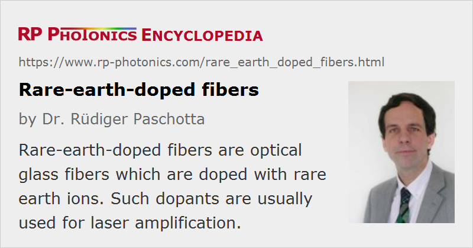

Rare-earth-doped Fibers
Definition: optical glass fibers which are doped with rare earth ions
More general term: optical fibers
German: seltene-Erden-dotierte Fasern
Categories: optical materials, fiber optics and waveguides
How to cite the article; suggest additional literature
Author: Dr. Rüdiger Paschotta
Fiber lasers and fiber amplifiers are nearly always based on glass fibers which are doped with laser-active rare earth ions (normally only in the fiber core). These ions absorb pump light, typically at a shorter wavelength than the laser or amplifier wavelength (except in upconversion lasers), which excites them into some metastable levels. This allows for light amplification via stimulated emission. Such specialty fibers are often called active fibers or laser and amplifier fibers. They are gain media with a particularly high gain efficiency, resulting mainly from the strong optical confinement in the fiber's waveguide structure.
This article discusses only aspects which are specific to rare-earth-doped fibers; see the article on fibers for more general aspects. Also see the article on fiber fabrication, discussing different fabrication technologies.
Common Types of Rare-earth-doped Fibers
The following table shows the most common laser-active ions and host glasses and also typical emission wavelength ranges of rare-earth-doped fibers:
Table 1: Common laser-active ions and host glasses and important emission wavelength.
| Ion | Common host glasses | Important emission wavelengths |
|---|---|---|
| neodymium (Nd3+) | silicate and phosphate glasses | 1.03–1.1 μm, 0.9–0.95 μm, 1.32–1.35 μm |
| ytterbium (Yb3+) | silicate glass | 1.0–1.1 μm |
| erbium (Er3+) | silicate and phosphate glasses, fluoride glasses | 1.5–1.6 μm, 2.7 μm, 0.55 μm |
| thulium (Tm3+) | silicate and germanate glasses, fluoride glasses | 1.7–2.1 μm, 1.45–1.53 μm, 0.48 μm, 0.8 μm |
| praseodymium (Pr3+) | silicate and fluoride glasses | 1.3 μm, 0.635 μm, 0.6 μm, 0.52 μm, 0.49 μm |
| holmium (Ho3+) | silicate glasses, fluorozirconate glasses | 2.1 μm, 2.9 μm |
The technologically most important rare-earth-doped fibers are erbium-doped fibers for erbium-doped fiber amplifiers and ytterbium-doped fibers for high-power fiber lasers and amplifiers.
Importance of the Host Glass
The chemical composition of the glass for the laser-active fiber core has many important influences on the possible performance and practical use of an active fiber:
- The limited transparency range may exclude the use of certain laser transitions. For example, mid-infrared lasers cannot be realized with silicate fibers, which are strongly absorbing for wavelengths above ≈2 μm.
- The glass composition strongly influences the maximum concentration of the dopant ions that can be incorporated without excessive clustering, which would resulting in quenching effects and possibly increased propagation losses.
- It also influences in various ways the optical transitions of the rare earth ions, in particular the emission and absorption cross sections, absorption and emission bandwidth, total transition rates and thus the metastable level lifetimes, etc.
- The rate constants for energy transfers between different ions also depend on the chemistry.
- Mainly the maximum phonon energy of the host glass determines the rate of multi-phonon transition processes, thus the speed of non-radiative transfers between certain levels. This effect can be strong: certain levels may be long-lived (multiple milliseconds) in heavy-metal fluoride glasses, but very short-lived (few microseconds) in silicate glasses.
- Some glasses (e.g. fluoride glasses) tend to be difficult and expensive to fabricate and handle. Clean fiber cleaves are not always easy to obtain, and often require modified methods.
- Some glasses are photosensitive, allowing the fabrication of fiber Bragg gratings with ultraviolet light. The photosensitivity can strongly depend on certain dopants.
- Glasses differ very much in their optical nonlinearities and optical damage threshold.
For rare-earth-doped fibers, the core composition is normally modified by additional dopants. For example, one rarely uses pure silicate glass, but rather some aluminosilicate, germanosilicate, or phosphosilicate glass. Some codopants such as aluminum improve the solubility of rare earth ions and thus allow for higher rare-earth doping concentrations without quenching of the upper-state lifetime. Others have effects on the refractive index, on the spectral shape of the optical transitions, or the rate of energy transfers. The articles on rare-earth-doped gain media, gain media, and fiber core give some more details.
For many upconversion lasers and visible fiber lasers, some kind of fluoride glass is required where the phonon energies are lowered so that the metastable level lifetimes are long enough (no quenching via multi-phonon transitions). Such fluoride fibers also exhibit good transmission in the mid-infrared and are therefore used for mid-infrared laser sources.
Codoped Fibers
Some fibers are intentionally doped with two different kinds of rare earth ions. Most popular is the combination of erbium and ytterbium (erbium–ytterbium fibers) – normally with a significantly higher concentration of ytterbium. When such a fiber is pumped e.g. around 980 nm, most of the pump light is absorbed by ytterbium ions (called sensitizer ions), bringing these into their excited states. From there, the energy can be efficiently transferred to the erbium ions, which then provide laser gain in the 1.5-μm spectral region. Compared with purely erbium-doped fibers, Er:Yb fibers offer much higher pump absorption per unit length and can therefore be used for fiber devices with much shorter lengths, such as distributed-feedback lasers. For example, this is useful for making robust single-frequency fiber lasers of a few centimeters length, or for double-clad fiber devices with a moderate length.
For the energy transfer to be efficient, the doping concentrations have to be well balanced, and the core composition must be suitable.
Ytterbium codoping can also be used for other gain systems, such as in praseodymium-doped upconversion lasers. This allows for, e.g., red, orange or blue emission with single-wavelength pumping (instead of dual-wavelength pumping for purely praseodymium-doped fibers).
Codopants can also be used for quenching the lower-state population in gain systems with self-terminating laser transitions. For example, praseodymium codoping allows for relatively efficient operation of 2.7-μm erbium fiber lasers.
Fibers for High-power Lasers and Amplifiers
For high-power fiber lasers and amplifiers, double-clad fibers are used. These have a highly multimode inner cladding, into which the pump light is launched, and a fiber core which is either single-mode or supports only a few modes. Only the core (or sometimes a ring around the core) is rare earth doped. Such fibers allow for a high beam quality of the laser or amplifier output, whereas the pump beam quality can be very low. The resulting devices are often called brightness converters, since the brightness of the output can be much higher than that of the pump source.
Characterization of Rare-earth-doped Fibers
In addition to all the properties of a passive (undoped) optical fiber, such as the guiding properties (effective mode area, numerical aperture, cut-off wavelength, bend losses), nonlinearities, etc., active fibers can be characterized with respect to several other properties:
- One of the most important parameters is the rare-earth doping concentration, most often specified in ppm wt (parts per million by weight). A higher doping concentration allows for efficient pump absorption in a shorter length and thus also reduces the effect of nonlinearities in high peak power devices. However, it can also lead to concentration quenching.
- Wavelength-dependent effective absorption and emission cross sections (and possibly ESA cross sections) together with the upper-state lifetime (and possibly lifetimes of intermediate levels) are required for calculating the wavelength tuning behavior, power efficiency, etc.
- Parameters for quantifying the speed of energy transfer processes are important particularly for codoped fibers.
As an alternative method, so-called Giles parameters can be specified, which depend on the doping concentration, effective mode area and effective transition cross sections.
For such characterization, a variety of measurement techniques are used. White-light absorption spectra can be used for finding absorption cross sections (for known doping concentrations). Emission cross sections are obtained from fluorescence spectra, with scaling e.g. via the reciprocity method (→ McCumber theory) or the metastable level lifetimes (→ Füchtbauer–Ladenburg equation). Upper-state lifetimes are often obtained from fluorescence measurements with pulsed pumping, and ESA parameters can be obtained in experiments with a modulated pump power.
The resulting set of data can be used e.g. in laser and amplifier models based on rate equations. Such models allow one, e.g., to predict or check the performance of fiber laser or amplifier devices, the effect of possible modifications, etc.
Further characterization may be required for quantifying effects such as photodarkening, which can sometimes seriously degrade the efficiency of active fiber devices.
Suppliers
The RP Photonics Buyer's Guide contains 20 suppliers for rare-earth-doped fibers. Among them:
Questions and Comments from Users
Here you can submit questions and comments. As far as they get accepted by the author, they will appear above this paragraph together with the author’s answer. The author will decide on acceptance based on certain criteria. Essentially, the issue must be of sufficiently broad interest.
Please do not enter personal data here; we would otherwise delete it soon. (See also our privacy declaration.) If you wish to receive personal feedback or consultancy from the author, please contact him e.g. via e-mail.
By submitting the information, you give your consent to the potential publication of your inputs on our website according to our rules. (If you later retract your consent, we will delete those inputs.) As your inputs are first reviewed by the author, they may be published with some delay.
Bibliography
| [1] | S. B. Poole, D. N. Payne, and M. E. Fermann, “Fabrication of low loss optical fibers containing rare earth ions”, Electron. Lett. 21, 737 (1985), doi:10.1109/JLT.1986.1074811 |
| [2] | S. B. Poole et al., “Fabrication and characterization of low-loss optical fibers containing rare earth ions”, IEEE J. Lightwave Technol. 4 (7), 870 (1986), doi:10.1109/JLT.1986.1074811 |
| [3] | J. E. Townsend et al., “Solution-doping technique for fabrication of rare earth doped optical fibres”, Electron. Lett. 23, 329 (1987), doi:10.1049/el:19870244 |
| [4] | M. E. Fermann et al., “Efficient operation of an Yb-sensitised Er fiber laser at 1.56 μm”, Electron. Lett. 24, 1135 (1988), doi:10.1049/el:19880772 |
| [5] | W. J. Miniscalco, “Erbium-doped glasses for fiber amplifiers at 1500 nm”, IEEE J. Lightwave Technol. 9 (2), 234 (1991), doi:10.1109/50.65882 |
| [6] | L. Wetenkamp et al., “Optical properties of rare earth-doped ZBLAN glasses”, J. Non-Cryst. Solids 140, 35 (1992), doi:10.1016/S0022-3093(05)80737-9 |
| [7] | R. Paschotta et al., “Characterization and modeling of thulium:ZBLAN blue upconversion fiber lasers”, J. Opt. Soc. Am. B 14 (5), 1213 (1997), doi:10.1364/JOSAB.14.001213 |
| [8] | G. G. Vienne et al., “Fabrication and characterization of Yb3+:Er3+ phosphosilicate fibers for lasers”, J. Lightwave Technol. 16 (11), 1990 (1998), doi:10.1109/50.730360 |
| [9] | S. Tanabe, “Rare-earth-doped glasses for fiber amplifiers in broadband telecommunication”, C. R. Chimie 5, 815 (2002) |
| [10] | M. J. F. Digonnet, Rare-Earth-Doped Fiber Lasers and Amplifiers, 2nd edn., CRC Press, Boca Raton, FL (2001) |
| [11] | R. Paschotta, tutorial on "Fiber Amplifiers" |
See also: active fibers, rare-earth-doped gain media, fibers, fiber fabrication, fiber core, fluoride fibers, double-clad fibers, fiber lasers, fiber amplifiers, erbium-doped gain media, erbium-doped fiber amplifiers, silica fibers, high-power fiber lasers and amplifiers, Giles parameters, photodarkening, phosphate glasses, specialty fibers
and other articles in the categories optical materials, fiber optics and waveguides

This encyclopedia is authored by Dr. Rüdiger Paschotta, the founder and executive of RP Photonics Consulting GmbH. How about a tailored training course from this distinguished expert at your location? Contact RP Photonics to find out how his technical consulting services (e.g. product designs, problem solving, independent evaluations, training) and software could become very valuable for your business!
|  |
If you like this page, please share the link with your friends and colleagues, e.g. via social media:
These sharing buttons are implemented in a privacy-friendly way!